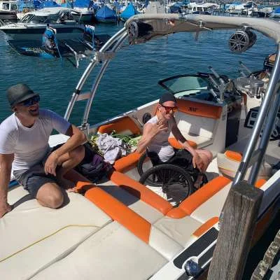

Wo liegt der Hafen Wollishofen?
Wollishofen ist ein Quartier im Süden der Stadt Zürich und liegt am linken Seeufer. Der Hafen Wollishofen befindet sich in 8038 Zürich, beim Restaurant Seerose. Wer ein Boot sucht, orientiert sich am einfachsten am Restaurant: Der Steg mit unseren Mietbooten liegt direkt daneben.
Von hier aus ist der See in alle Richtungen offen. Nach Norden sehen Sie die Stadt Zürich, am gegenüberliegenden Ufer die Goldküste, und nach Süden öffnet sich der See Richtung Rapperswil. Unsere Bootsvermietung am Zürichsee nutzt diesen Standort, weil Sie in wenigen Minuten auf dem offenen Wasser sind und lange Anfahrten auf dem See entfallen.
Adresse: Bootsvermietung Zürichsee, Hafen Wollishofen (beim Restaurant Seerose), 8038 Zürich.
Anreise mit Tram und Bus
Der Hafen ist mit dem öffentlichen Verkehr gut erreichbar. Fahren Sie mit Tram oder Bus bis nach Wollishofen und gehen Sie von dort zu Fuss zum See. Aktuelle Verbindungen und Haltestellen finden Sie am besten im Fahrplan der Zürcher Verkehrsbetriebe oder auf SBB.ch, weil sich Linien und Fahrpläne ändern können. Planen Sie für den Fussweg zum Hafen ein paar Minuten ein und rechnen Sie mit Gepäck wie Kühlbox und Badetüchern.
Gerade im Sommer lohnt sich die Anreise mit dem ÖV: Sie sparen die Parkplatzsuche, und wer nach einem Apéro auf dem See noch ein Glas getrunken hat, kommt entspannt nach Hause.
Anreise mit dem Auto und Parkplätze
Wenn Sie mit dem Auto kommen, finden Sie Parkplätze in Hafennähe. An schönen Wochenenden sind die Plätze am See schnell belegt. Wir empfehlen deshalb, etwas früher anzureisen oder auf den öffentlichen Verkehr auszuweichen. Beachten Sie die Beschilderung und die Parkzeiten vor Ort.

Übernahme und Rückgabe direkt am Steg
Die Bootsübernahme erfolgt in der Regel ab Hafen Wollishofen, und auch die Rückgabe findet dort statt. So läuft die Übernahme ab:
- Sie kommen zum vereinbarten Zeitpunkt zum Steg und bringen den Mietvertrag in zwei Exemplaren mit.
- Wir übergeben Ihnen das Boot vollgetankt und erklären das Wichtigste.
- Erstmieter erhalten eine kurze Einweisung. Eine ausführliche Einweisung mit Instruktionsfahrt (CHF 70) können Sie vorab buchen.
- Sie legen ab und geniessen den See.
- Zur Rückgabe kommen Sie zurück an den Steg. Das Boot muss vollgetankt und von persönlichen Gegenständen geräumt sein.
Nach Vereinbarung ist gegen Kostenübernahme auch ein anderer Hafen möglich. Alle Regeln finden Sie in den Mietkonditionen.
Tanken bei der Seerose: 24-Stunden-Tankstelle
Die Boote werden vollgetankt übergeben, und die Rückgabe erfolgt ebenfalls vollgetankt. Der Treibstoff ist nicht im Mietpreis enthalten, sondern wird nach Verbrauch abgerechnet. Beim Restaurant Seerose gibt es eine 24-Stunden-Tankstelle, an der Sie mit Kreditkarte oder bar bezahlen können. Planen Sie vor der Rückgabe kurz Zeit zum Tanken ein, damit Sie das Boot pünktlich zurückbringen. Bei verspäteter Rückgabe verrechnen wir pro angebrochene Stunde CHF 70.
Das Restaurant Seerose als Treffpunkt
Das Restaurant Seerose ist der bekannteste Orientierungspunkt am Hafen. Viele Gäste treffen sich vor der Abfahrt und lassen den Tag danach ausklingen. Öffnungszeiten und Angebot erfragen Sie am besten direkt beim Restaurant, da wir diese nicht beeinflussen. Wenn Sie in einer Gruppe unterwegs sind, kann es praktisch sein, vorher einen Treffpunkt zu vereinbaren, damit alle gemeinsam am Steg ankommen.
Ein Tag ab Wollishofen: Beispielablauf
Damit Sie sich besser vorstellen können, wie ein Tag ab dem Hafen Wollishofen aussehen kann, hier ein Vorschlag für eine Ganztagesmiete. Der Ablauf ist ein Beispiel, Sie bestimmen Zeiten und Route selbst:
- Vormittag: Übernahme am Steg, Einweisung, danach Ablegen. Am Morgen ist der See oft ruhig und spiegelglatt.
- Späterer Vormittag: Cruising entlang der Goldküste mit Blick auf Villen und Rebberge.
- Mittag: Badestopp, zum Beispiel in der Nähe der Insel Ufenau, mit Picknick an Bord.
- Nachmittag: Weiterfahrt Richtung Rapperswil oder Rückfahrt in Etappen mit weiteren Badestopps.
- Abend: Rückkehr nach Wollishofen, Tanken bei der Seerose, Rückgabe am Steg.
Mehr Ideen, wie Sie die Zeit nutzen, finden Sie im Ratgeber Boot mieten am Zürichsee.

Wollishofen: Ein Quartier am See
Wollishofen ist ein Wohnquartier im Süden der Stadt Zürich und liegt direkt am Seeufer. Entlang des Wassers laden Grünflächen und Spazierwege zum Verweilen ein, viele Zürcherinnen und Zürcher nutzen das Ufer im Sommer zum Baden, Joggen oder Spazieren. Wer vor oder nach der Bootsfahrt noch Zeit hat, kann den Tag am See entspannt ausklingen lassen. Der Hafen gehört zu diesem Seeufer: Boote kommen und gehen, Segler bereiten sich auf die Ausfahrt vor, und am Steg herrscht an schönen Tagen reger Betrieb. Gerade deshalb lohnt sich die Reservation im Voraus.
Wetter und Bedingungen am Hafen
Bevor Sie sich auf den Weg machen, lohnt sich ein Blick auf Wetterprognose und Windvorhersage. Am Zürichsee können Wind und Wellengang rasch wechseln. Bei Regen oder Sturm kann Ihre Reservation in Absprache mit uns kostenlos annulliert werden, und bei unsicherem Wetter ist auf Anfrage eine Preisreduktion möglich. Melden Sie sich am besten früh am Tag telefonisch, wenn Sie unsicher sind – so finden wir gemeinsam eine Lösung.
Routen ab Wollishofen
- Richtung Stadt Zürich: Eine ruhige Fahrt Richtung Norden, besonders schön am Abend.
- Quer über den See zur Goldküste: Für Badestopps und eine ruhige Cruising-Runde.
- Richtung Ufenau und Rapperswil: Die grosse Runde, die sich vor allem bei einer Ganztagesmiete lohnt.
- Sunset-Fahrt: Mit der Abendmiete (maximal 3 Stunden, nur von Montag bis Freitag) erleben Sie Zürich bei Sonnenuntergang.
Wer nicht selbst fahren möchte oder keinen Führerschein hat, bucht ein Boot mit Skipper. Er kennt die schönsten Badestellen und Sunset-Spots. Mehr dazu auf der Seite Boot mit Skipper mieten.
Tipps für Ihren Besuch am Hafen
- Kommen Sie ein paar Minuten vor dem vereinbarten Termin, damit die Übernahme ohne Hektik klappt.
- Bringen Sie Führerausweis, Ausweis und den ausgefüllten Mietvertrag mit.
- Nehmen Sie wenig Gepäck mit, damit es an Bord nicht eng wird.
- Informieren Sie uns telefonisch, wenn Sie sich verspäten oder das Wetter umschlägt.
- Kontaktdaten: Tel. +41 79 431 88 22 oder +41 79 623 17 46, E-Mail miete@bootsvermietungzuerichsee.ch.
Die Kontaktseite mit Karte und Reservationsformular finden Sie unter Kontakt und Reservation.
Häufige Fragen zum Hafen Wollishofen
Wo genau übernehme ich das Boot?
Am Steg im Hafen Wollishofen, direkt beim Restaurant Seerose in Zürich.
Gibt es Parkplätze beim Hafen?
Ja, in Hafennähe gibt es Parkplätze. An schönen Wochenenden sind sie schnell belegt, kommen Sie deshalb früh oder mit dem ÖV.
Kann ich beim Hafen tanken?
Ja, bei der 24-Stunden-Tankstelle beim Restaurant Seerose mit Kreditkarte oder bar.
Was ist, wenn ich mein Boot an einem anderen Ort zurückgeben möchte?
Nach Vereinbarung ist ein anderer Hafen gegen Kostenübernahme möglich. Sprechen Sie uns bei der Reservation an.
Jetzt Boot ab Wollishofen reservieren
Der Hafen Wollishofen ist der ideale Startpunkt für Ihren Tag auf dem Zürichsee. Alle Boote sehen Sie auf unserer Startseite oder im Überblick auf Unsere Boote. Schreiben Sie uns per WhatsApp – wir bestätigen Ihnen Verfügbarkeit und Preis. Eine Übersicht über unseren Betrieb finden Sie im Beitrag Bootsvermietung Zürichsee.